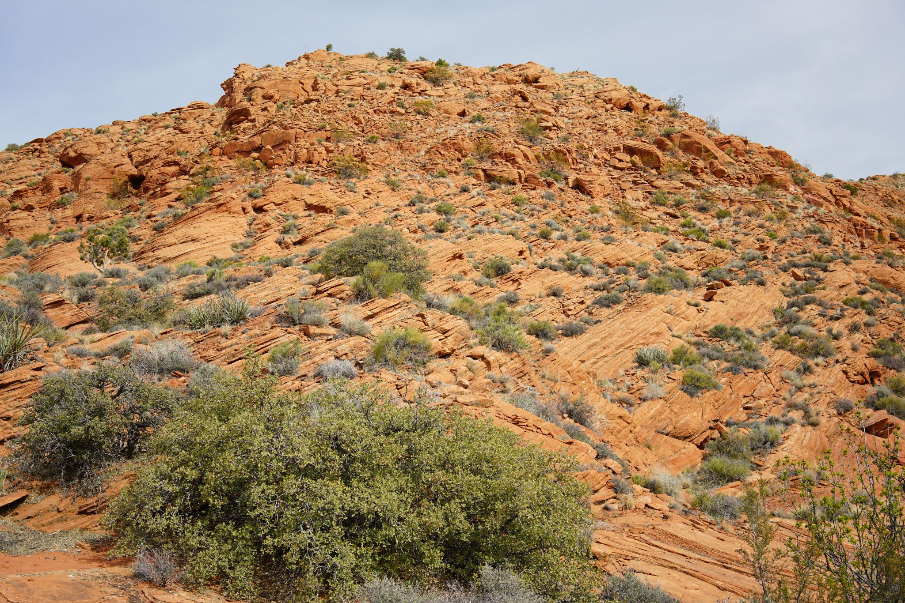
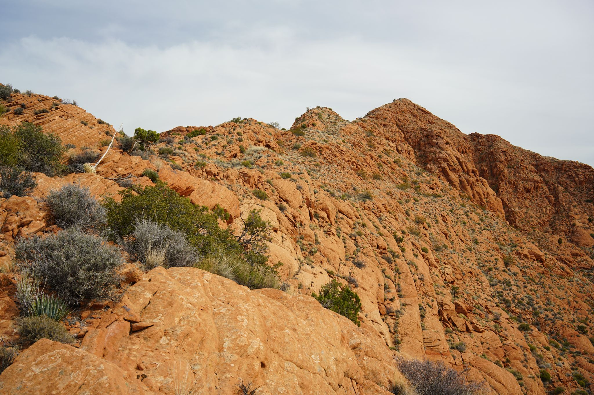
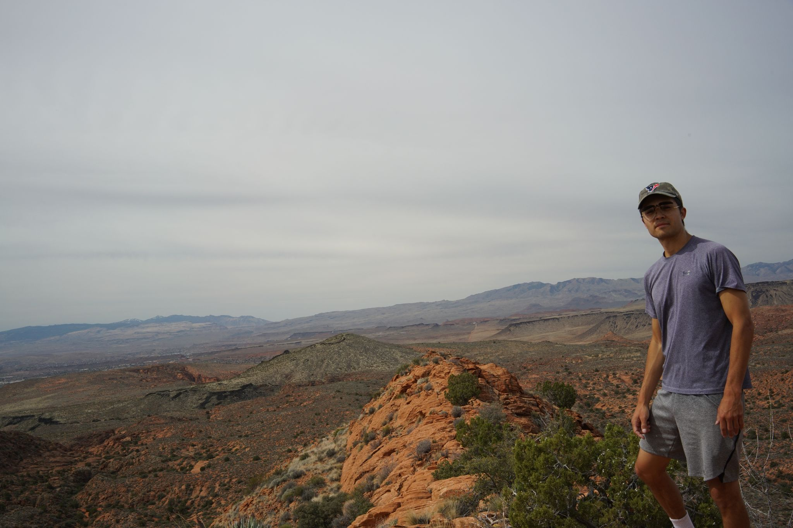
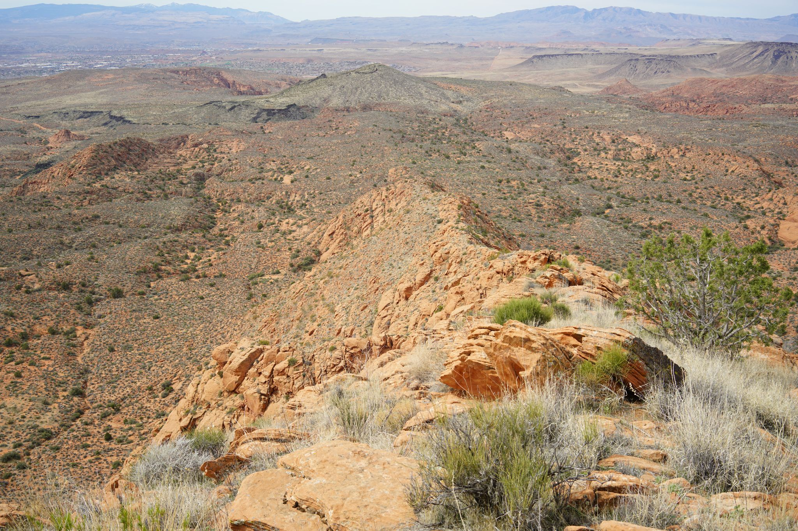
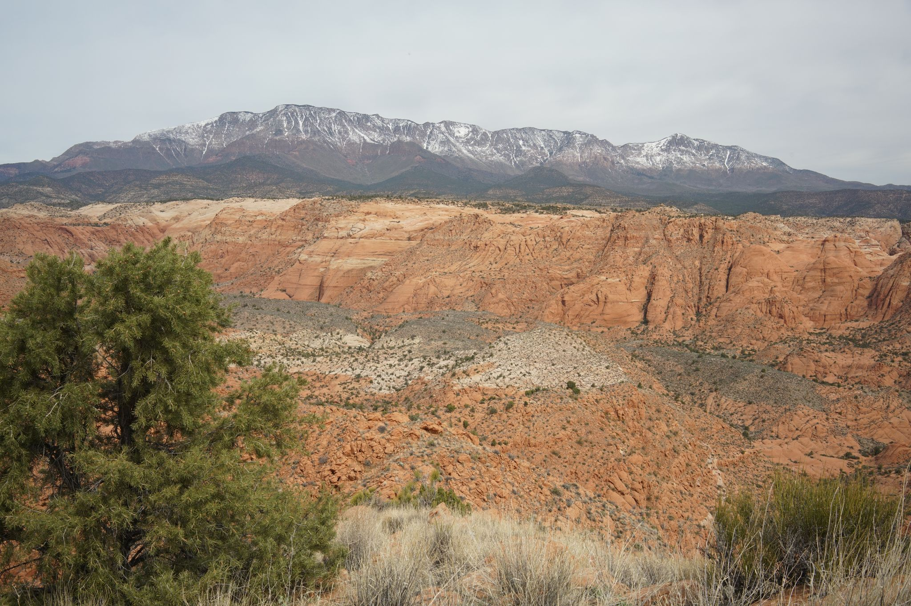
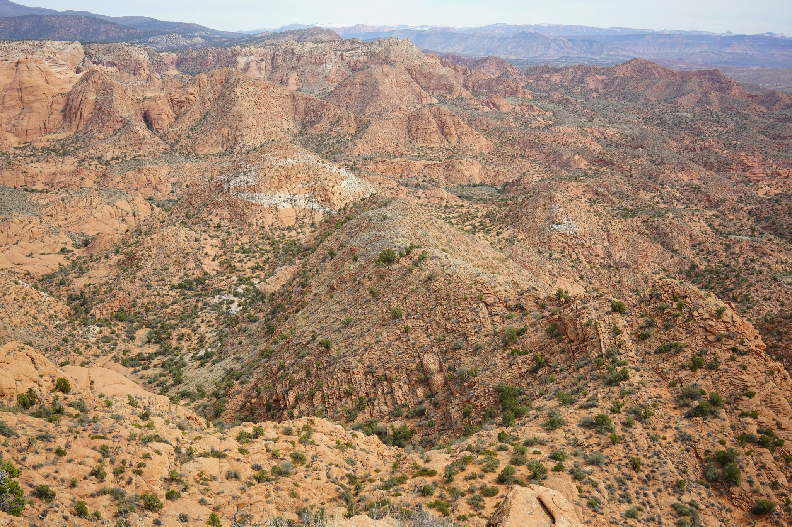
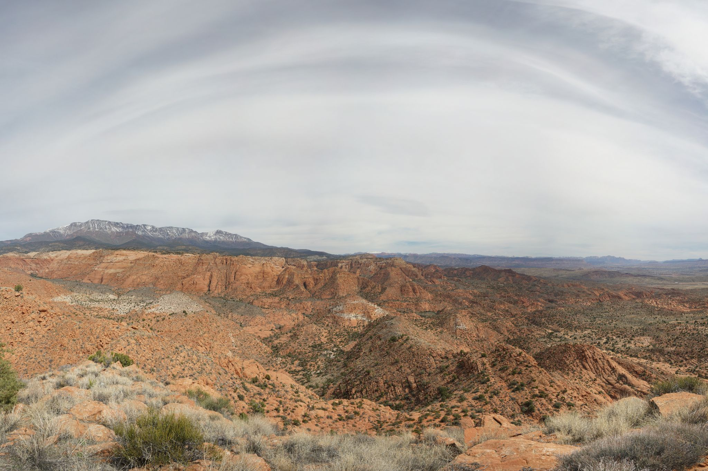

3/22/25
Looking up at the first little hill to start the ascent. Route taken was a zig zag up the middle over loose rocks.

A photo of the peak in the distance after gaining the ridge





Arc in the sky with Yant Flat in the middle left followed by the snow capped Pine Valley mountains in the background. The peak offered a good vantage point of the surrounding Cottonwood Canyon Wilderness area
